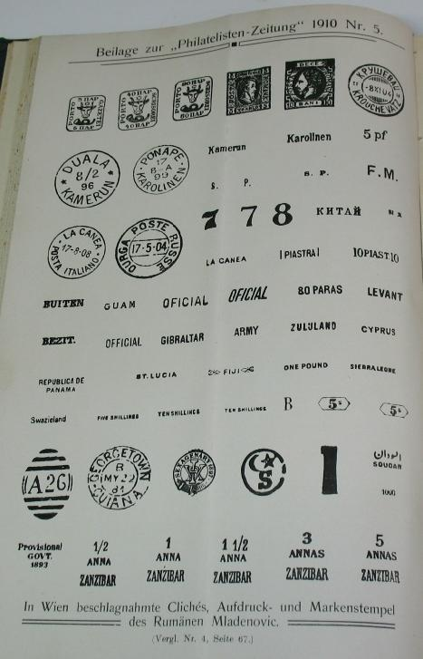
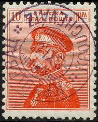

MLADENOVIC (Rumanian stamp forger)
Return To Catalogue -
Rumania
Note: on my website many of the
pictures can not be seen! They are of course present in the
catalogue;
contact me if you want to purchase the catalogue.

The forger Mladenovic made stamp forgeries, here a page from the
Philatelisten Zeitung of 1910.

Stamp of Serbia with "KROUCHEVATZ -8XI 0" very similar
to the forged cancel shown above.
I have no further information about this stamp
forger.
Copyright by Evert Klaseboer